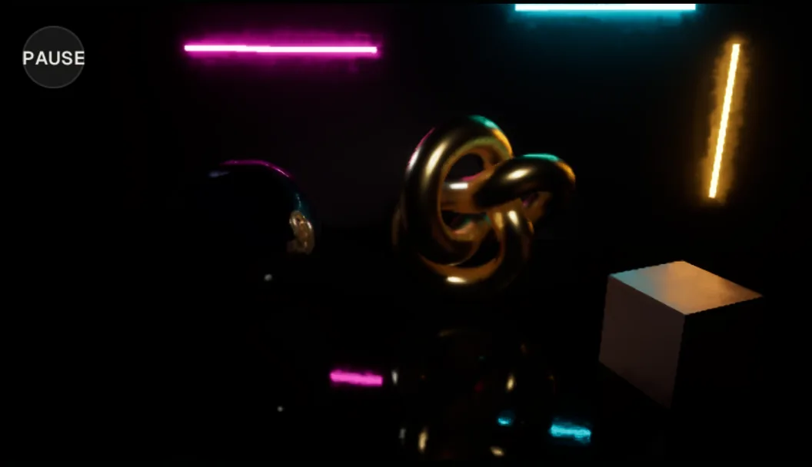
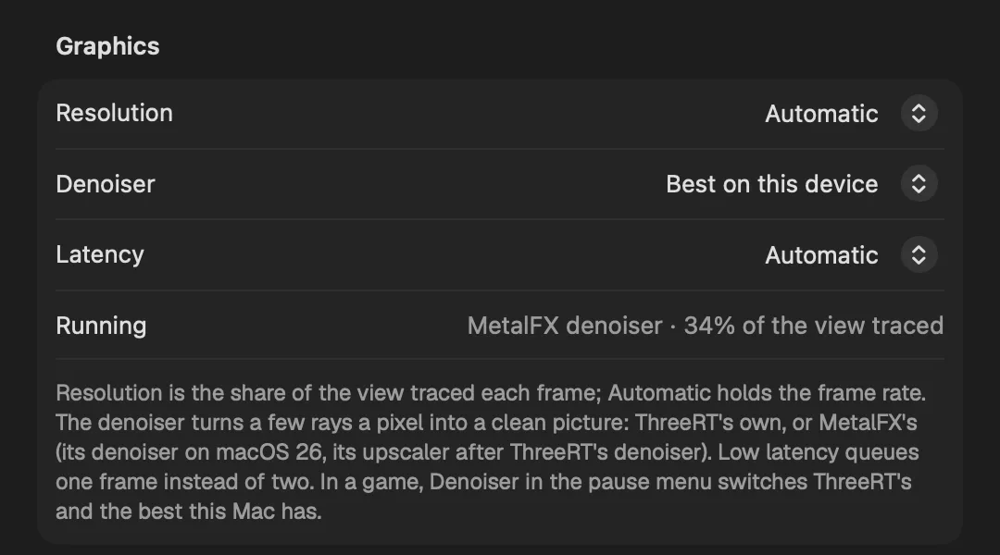
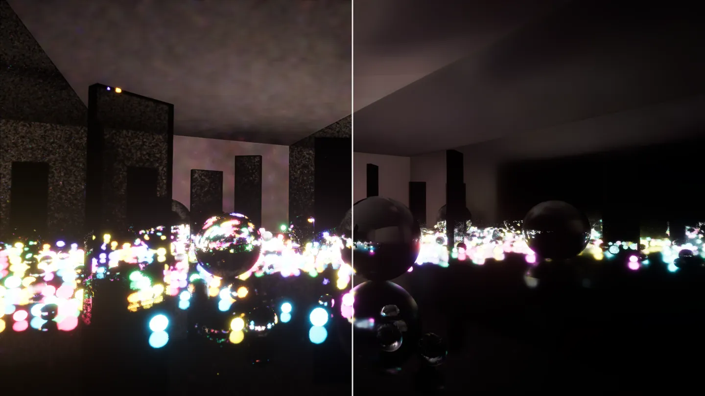

tools/denoise-demo.Four settings
Between what a frame can afford and what is shown there are four gaps. Each setting closes one, and only one, so they can be chosen apart.
| Setting | The gap | ThreeRT’s own | Vendor technology |
|---|---|---|---|
quality | How many rays: the resolution every later stage works from | Dynamic resolution (auto), or a fixed share | A budget, not a technique |
reconstruction | Noise, then missing pixels | A denoiser and a temporal upscaler | MetalFX, DLSS (Super Resolution, Ray Reconstruction), FSR |
frameGeneration | Frames shown per frame rendered | None | None integrated yet (below) |
latency | Input to photon | One frame queued instead of two | Not yet: Reflex, Anti-Lag, XeLL |
“Neural rendering” is not a fifth setting: it says how something is done, not which gap it closes. A neural denoiser or upscaler is a reconstruction method; a neural radiance cache would be a lighting option, neural texture compression an asset format.
quality takes auto, native (100 %), quality (2/3), balanced (0.58), performance (1/2), ultra-performance (1/3) or a number. The presets are the vendors’ ratios exactly: a third of 1920 is 640, the smallest input DLSS takes at 1080p, where a typed 0.333 would give 639.
Denoise, then upscale
Reconstruction is two jobs in a fixed order. First the noise: a pixel’s one ray is an estimate, and neighbouring pixels and earlier frames make it a good one. Then the pixels: the image is traced smaller than the screen and brought to its size from the history of earlier frames, which is also what anti-aliases it.
Vendor technology takes over the second job, or both, and that is the only distinction the engine makes:
An upscaler reads ThreeRT’s denoised image, depth, motion and a reactive mask. A joint denoiser reads the noisy trace itself, with the guides it needs to tell lighting from texture: diffuse and specular albedo, the normal, roughness, how far the reflected ray went, and an overlay of what has no noise to remove (lights and sky seen directly, or in a mirror). One network that sees the raw signal keeps detail a separate denoiser would have averaged away first, and keeps one history instead of two.
Because the two read different signals, they are two contracts, not two flavours of one. The engine packs the signals for both, and takes the result back into its own exposure, bloom, depth of field and tone mapping, so a vendor’s code is an adapter of a few calls.
Methods and devices
reconstruction | Denoise | Upscale | Where |
|---|---|---|---|
builtin | ThreeRT | ThreeRT, temporal | Everywhere (the default) |
metalfx | ThreeRT | MetalFX temporal scaler | macOS 13+, iOS 16+ |
metalfx-denoised | MetalFX temporal denoised scaler, both | macOS 26+ on Apple silicon, iOS 26+ | |
dlss | ThreeRT | DLSS Super Resolution; DLAA at 100 % | NVIDIA RTX, Windows or Linux, Vulkan, an engine built with DLSS |
dlss-rr | DLSS Ray Reconstruction, both | As dlss | |
fsr | ThreeRT | FSR 1 (spatial, no history) | Everywhere, browsers too |
off | None | None, no history | Everywhere: the trace as it is, to compare |
auto | The best this device runs: on a Mac or an iPhone the MetalFX denoiser, then its upscaler; with DLSS, Ray Reconstruction, then Super Resolution; else ThreeRT’s own | ||
A list is an order of preference: ["dlss-rr", "metalfx-denoised", "builtin"] runs the first one this device has, and ThreeRT’s own ends every list. The ThreeRT clients run every method of their platform except DLSS, whose SDK they do not ship; DLSS is for engines you build yourself (setup).

In the clients
Every ThreeRT client has a Graphics section in its settings, with the same three choices worded the same way, and only the methods the device has:
- Resolution: Automatic (the client’s dynamic resolution, which holds the frame rate), or a fixed share of the picture.
- Denoiser: ThreeRT, Best on this device, or a method by name: MetalFX denoiser and MetalFX upscaler on a Mac and an iPhone, FSR 1, Off.
- Latency: Automatic, Off, or Low latency.
| Client | Where |
|---|---|
| macOS | Settings › Graphics, with the method running in the open game and its share of the view; Game › Denoiser in the menu bar |
| iPhone | The gear on Home, with what the last game ran |
| Steam Deck, Linux | Settings: A steps to the next choice, Left and Right move through them |
| Android | Settings › Picture |
| Windows | Settings › Graphics |
In a game, the pause menu’s Denoiser line shows the method that runs and switches between ThreeRT’s own and the best the device has, on every client: the quickest way to compare them on your own scene.

In code
A game can ask for settings itself, for instance a cinematic scene that wants the best denoiser. These are the device’s view settings, not scene state: they are not sent to other players, and the player’s own choice in the client can change them again.
import { rendering } from "@threert/scene";
rendering.set({
quality: "performance",
reconstruction: ["metalfx-denoised", "dlss-rr", "builtin"],
latency: "auto",
});
const s = rendering.status();
// s.reconstruction: { requested, active, denoise, upscale,
// fallback, skipped: [{ method, reason, detail }] }
// s.quality: { requested, scale, dynamic }
// s.latency: { requested, active, framesInFlight }
set changes the settings it is given from the next frame, returns true when a renderer took the request (not a support check), and throws a TypeError for a name it does not know. Outside the client, the engine’s own commands take the same settings:
$ threert-render play game.js --quality performance \ --reconstruction metalfx-denoised,builtin --latency on # a running session, one JSON line on stdin: {"cmd":"rendering","reconstruction":["dlss-rr","dlss"],"quality":"balanced"}
In the engine’s viewer, M switches between ThreeRT’s own and auto, and N steps through every method; the title bar says which ran.
What ran, and why
Nothing falls back silently. The status of every frame says which method ran, who denoised and who upscaled, and for each method tried before it, why not:
| Reason | Meaning |
|---|---|
unavailable | Not in this build or on this platform (DLSS on a Mac), or no provider by that name |
unsupported | The device, the OS or the size is outside what it takes, with the provider’s own sentence: “the MetalFX temporal denoised scaler takes outputs 1.00x to 3.00x its input; 637x358 to 2546x1432 is 4.00x” |
provider-error | It failed; ThreeRT’s own takes over from that frame |
diagnostic-view | A view mode (base colour, normals) is on: those are ThreeRT’s own buffers |
Each provider also says which render scales it takes. Under auto quality, dynamic resolution stays within the range of the method you asked for: a big window the governor would hold at a quarter of its pixels goes up to a third, where MetalFX runs, instead of quietly keeping ThreeRT’s own.
Your own provider
A host that embeds the engine in Rust can add a method of either kind and select it as custom:<id>, from Rust or from game code:
impl UpscaleProvider for MyScaler {
fn prepare(&mut self, gpu: &Gpu, size: ReconstructionSize) -> Result<Prepared> {
Ok(Prepared::ready(size)) // or Prepared::Unsupported("why".into())
}
fn encode(&mut self, f: ReconstructionFrame, e: &mut CommandEncoder)
-> Result<Option<CommandBuffer>> {
// read f.color, f.depth, f.motion, f.reactive;
// write f.output (HDR, in f.radiance_unit nits)
Ok(None)
}
}
live.register_upscaler("custom:my-scaler", MyScaler::new())?; // or register_joint_denoiser
The engine owns the contract: it packs every texture (formats, units and conventions are documented on ReconstructionFrame and JointGuides in renderer/src/live/reconstruction.rs), runs a native command buffer the provider returns in order, and keeps post-processing and presentation. MetalFX and DLSS are written exactly this way.
What it costs
Measured on an M3 Max at a 1920 × 1080 picture traced at half its size, Kaleido running in real time:
| Denoiser | Frame rate | GPU a frame |
|---|---|---|
| ThreeRT’s own | 77 fps | 12.6 ms |
| MetalFX denoiser | 68 fps | 13.1 ms |
So MetalFX buys the picture, not frames: in Kaleido it is far cleaner (walls without sparkle, readable reflections in the chrome, no smeared orbs). It is not better everywhere: in Bistro at night ThreeRT’s own stays closer to the offline reference, which MetalFX renders a little darker and greyer. On an RTX 5070 Laptop, DLSS at half resolution ran at the cost of ThreeRT’s own upscaler at the same scale and matched the image quality of ThreeRT’s at two thirds, 1.6 times faster. Try your scene: the pause menu switches it.

Not yet
- Frame generation is a setting with no method behind it: asking for
2xreportsunavailable. Generating frames needs the engine to own presentation and to draw the HUD apart from the picture. - Latency is the engine’s own queue depth; no vendor’s low-latency mode is connected.
- More vendors: XeSS, FSR 2 and later, Arm’s and Qualcomm’s upscalers, DirectSR. Each is an adapter on one of the two contracts.